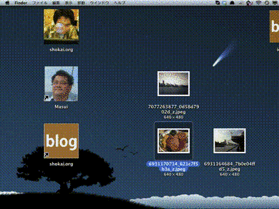

- make your "face-upload.app"
- Drag&Drop files
- upload
- automatically open WebBrowser and copy URL

Requirements
- Mac OSX
- File Server (SSH enabled)
Make Your Face-upload App
% git clone git://github.com/shokai/face-upload.git
% cd face-upload
% cp sample.config.yml config.ymledit config.yml
ssh : "user_name@example.com"
dir : "/home/user_name/public_html/file/"
url : "http://example.com/~user_name/file/"
generate app
% ./setup
=> generage "face-upload.app"